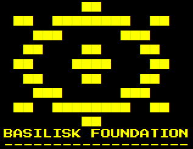

<!DOCTYPE html>
<html lang="en">
<head>
    <meta charset="UTF-8">
    <title>basilisk terminal</title>
    <style>
        @import url('https://fonts.googleapis.com/css2?family=Press+Start+2P&display=swap');
        body{
            background-color: black;
        }
        h1{
            color: white;
            font-size: large;
            font-family: 'Press Start 2P', cursive;
            padding-left: 1%;
        }
        h1{
            color: white;
            font-size: large;
            font-family: 'Press Start 2P', cursive;
            padding-left: 1%;
        }
        .term{
            background-color: black;
            color: white;
            border: none;
            outline: none;
            font-family: 'Press Start 2P', cursive;
            width: 80%;
            font-size: large;
        }
        #a{
            color: gray;
        }
        #b{
            color: white;
        }
        #c{
            color: green;
        }
        #d{
            color: red;
        }
        #e{
            color: lightblue;
        }
        #f{
            color:yellow;
        }
        #f1{
            color:yellow;
            line-height: 50%;
        }

    </style>
</head>
<body>
<input type='text' class="term" id="term">  
<script>
    msg = null
    var youID = '54E18214407B'
    var pcID = '890AFB310ED3'
    var term = document.getElementById("term")
    term.value = ""
    function printline(te, num){
        document.body.insertAdjacentHTML('afterend', `<h1 id="${num}">${te}</h1>`)
        term.focus()
    }

    //gameloop
    printline('Welcome to basilisk terminal 1.8.', 'c')
    printline('initialising null variables...', 'b')
    setTimeout(function(){
       printline('establishing connection to Basilisk foundation Z-class conceptual object manupulation node...', 'b')
        setTimeout(function(){
            printline('creating reality modification reference point...', 'b')
            printline('calibrating systems...', 'b')
            setTimeout(function(){
            printline('Sucesfully calibrated!', 'b')
            term.value = ""
            term.focus()
    }, 5500)
    }, 800)
    }, 300)
    document.addEventListener('keypress', function(e){
        if(e.keyCode==13){
            printline(term.value, 'a')
            cmds(term.value)
            term.value = ""
            term.focus()
            }
    })
    function checkId(x, y, z){
        if(text.split(' ')[1]==x && text.split(' ')[2]==y && text.split(' ')[3]==z){
                return(true)
            }
    }
    function cmds(text){
        cmd = text.split(' ')[0];
        if(cmd == 'help'){
            printline(`the documentation can be found <a href='documentation.html' target="_blank">here</a>`)
        }else if(cmd=='readMsg'){
            if(msg){
                for(i in msg){
                    printline(msg[i], 'e')
                }
                msg = null
            }else{
                printline('there are currently no messages', 'd')
               
            }
        }else if(cmd=='getIdByPos'){
            function checkId(x, y, z){
                if(text.split(' ')[1]==x && text.split(' ')[2]==y && text.split(' ')[3]==z){
                    return(true)
                }
            }
            if(checkId(0, 0, 0)){
                printline(`the entity ID at the specified coordinates is ${youID} (this is you)`)
            }
            if(checkId(1, 0, 0)){
                printline(`the entity ID at the specified coordinates is ${pcID} (this is your computer, the C.O.M terminal)`)
            }
        }else if(cmd=='print'){
            printline(text.split(' ').slice(1).join(' '))
        }else if(cmd=='logo'){
            document.body.insertAdjacentHTML('afterend', ``)
        }else{
            printline('invalid command', 'd')
        }
    }
    setTimeout(function(){
        msg = [`+--[NEW MESSAGE]-----------------------------------------+`,
                `from "Site Overseer", to "Miachel b."`,
                `Welcome, miachel, to your new job at BASILISK FOUNDATION.`,
                `As you know, due to a recent breach of containment, you are working from home.`,
                `We have provided you with an expiremental version of the C.O.M system.`,
                `C.O.M standing for Conceptual Object Manipulation, of course.`,
                `anyways, your job is to eliminate possible threats to the foundation via the C.O.M.`,
                `whenever a threat is detected by our sensors, you will receive a notification.`,
                `use your system to eliminate the threat.`,
                `if you are unsure of how to do this, use the command "help".`,
                `please note that frivolous use of the COM is STRICTLY forbidden,`,
                `and will result in immediate termination via cognitohazard.`,
                `thank you for working with us, and good luck.`,
                `+-------------------------------------------------------+`].reverse()
        printline(`[!] you have one (1) pending message. use the command "readMsg" to open it.`, 'f')
    }, 20000)
    function warning(text){
        printline(`[!] WARNING: ${text}`, 'd')
    }

</script> 
</body>
</html>